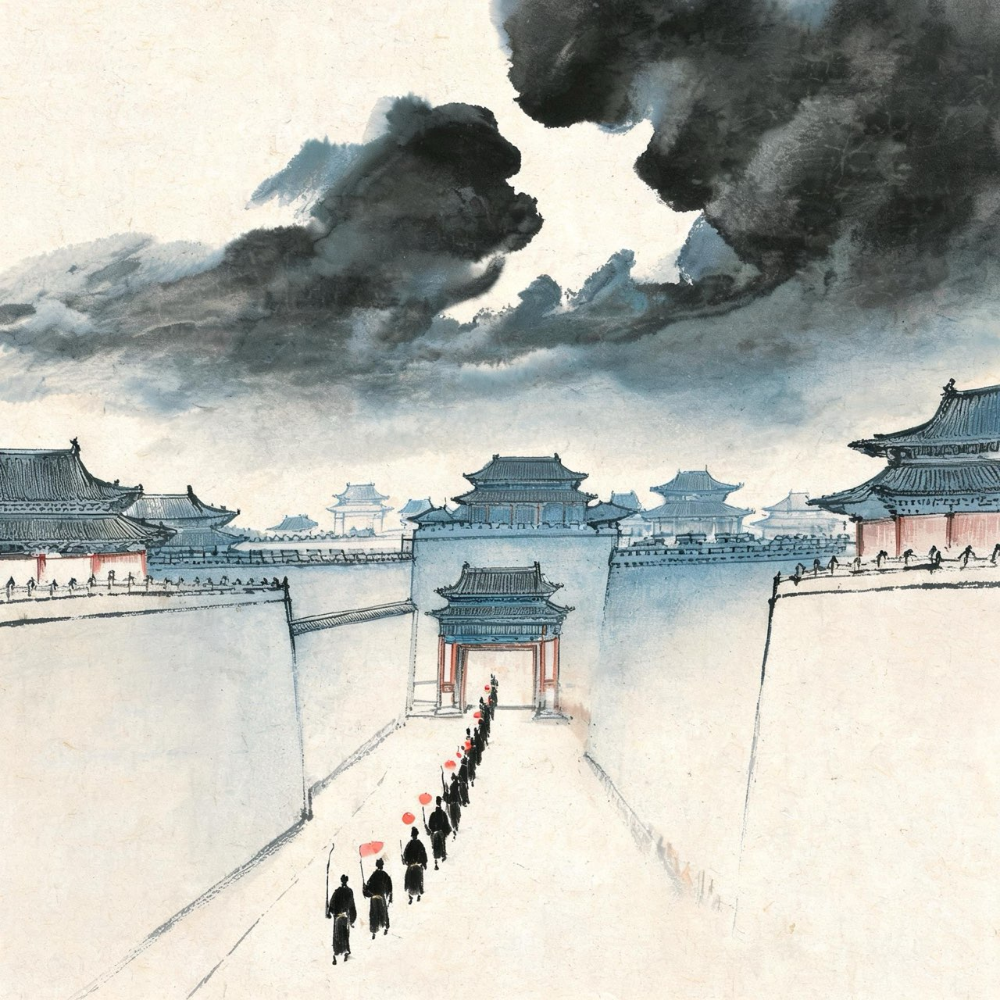
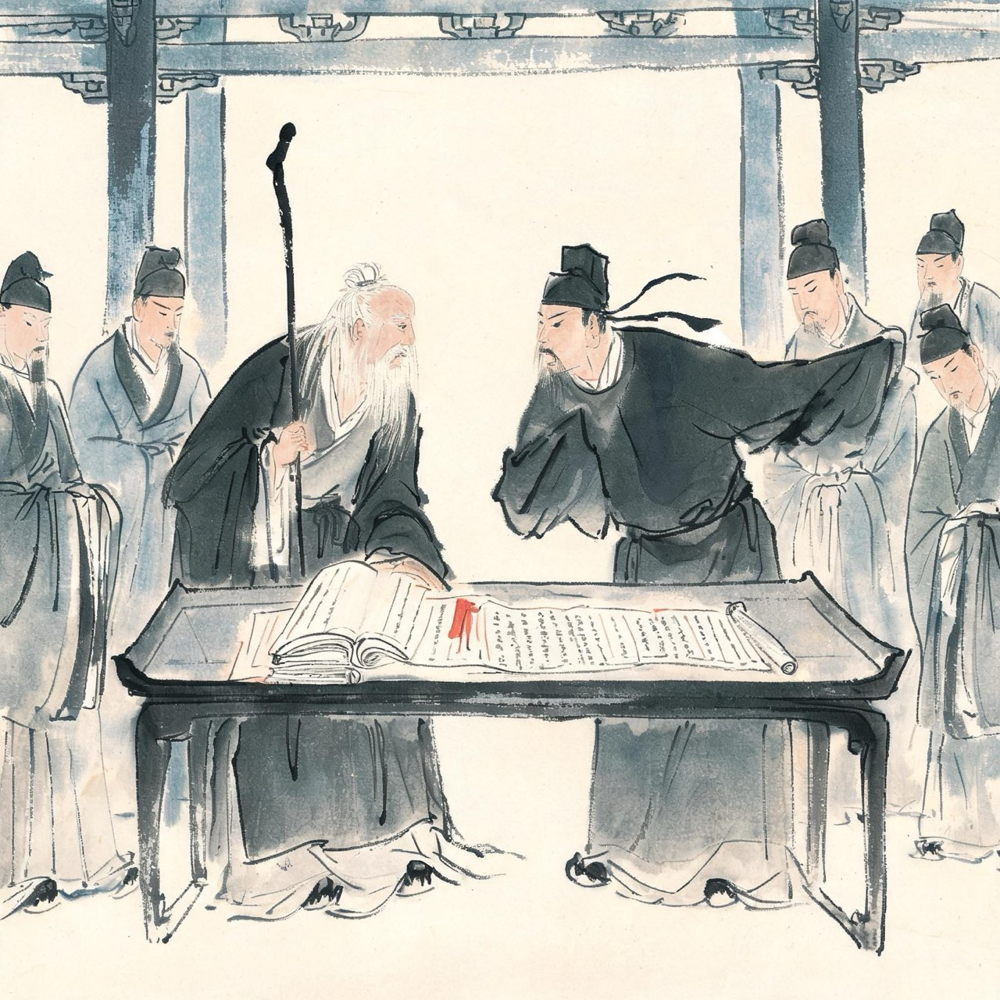
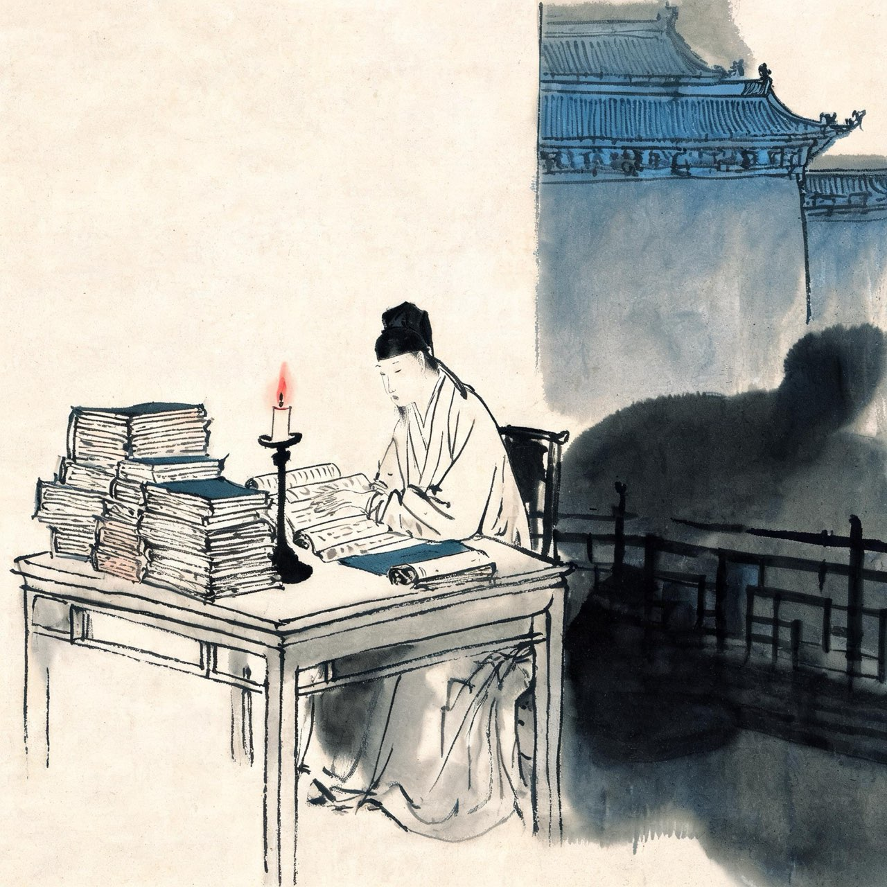
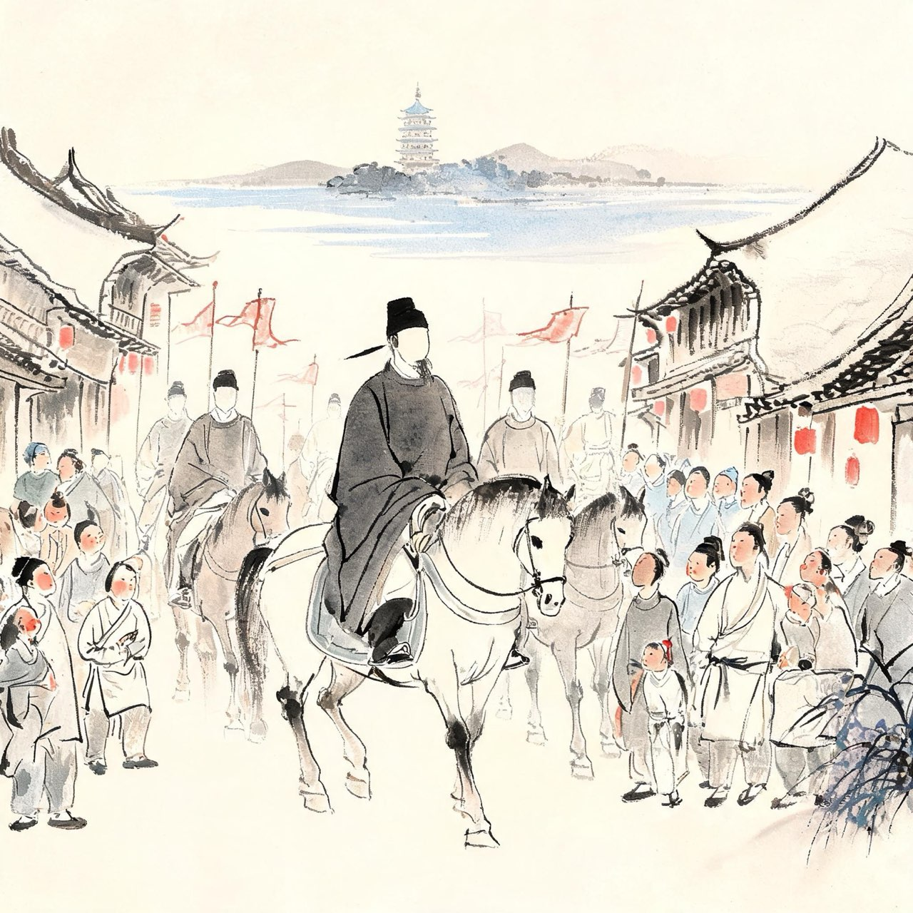
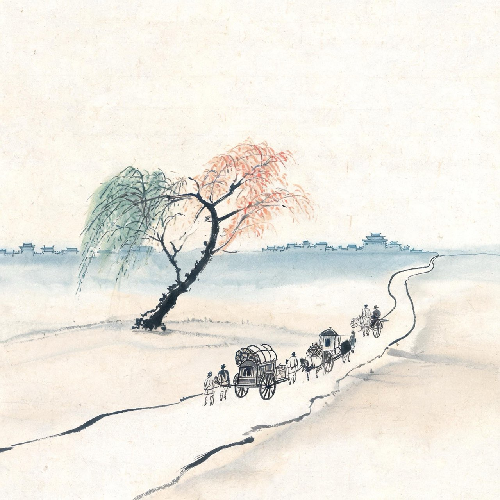
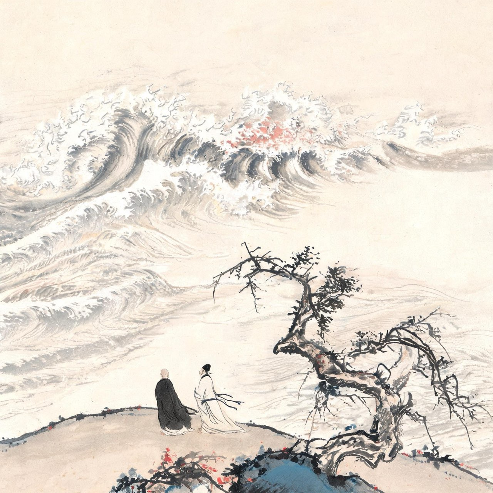
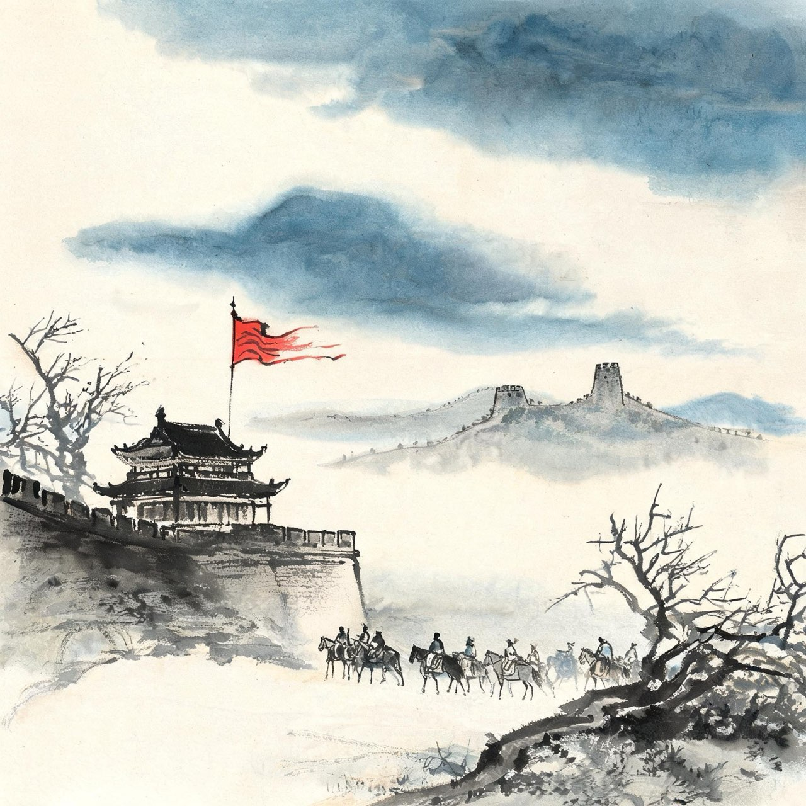

苏轼 · 1085-1093
元祐
高处不胜寒

天变了
元丰八年三月，神宗皇帝驾崩，年方三十八。幼子哲宗即位，高太后垂帘听政。
高太后一向反对新法。她起用保守派领袖司马光为相，朝廷风向一夜之间倒转：历时十八年的王安石变法，被以迅雷之势全面废除，史称元祐更化。
曾因反对新法下狱的苏轼，一夜之间从罪臣变成了功臣。他被从汝州量移登州，刚到登州五天，诏书又到：回京，任礼部郎中。
五天，又一纸：升起居舍人。
命运把他从泥里拔起来，甩向云端。
事件·十七个月，连升数级
从元丰八年末到元祐元年九月，苏轼的官职轨迹：
登州太守（五日）→ 礼部郎中 → 起居舍人 → 中书舍人 → 翰林学士知制诰，三品，掌管起草诏书——宰辅的预备梯队。
十七个月，从戴罪之身到三品大员。宋朝官场罕见。
当年乌台诗案里他写给弟弟的绝命诗犹在，如今他的笔下要替皇帝起草诏书。命运翻脸，比翻书还快。

当面顶撞司马光
如果苏轼懂得做官，此刻只需闭嘴。
司马光尽废新法，苏轼偏偏站出来说：新法不是全错。免役法施行十余年，行之有效，骤然恢复差役法，害处更大——为此他在政事堂与司马光争得面红耳赤。
回家后气犹未消，连呼：司马牛！司马牛！
当年反对新法，他是异类；如今维护免役法，他又成了旧党里的异类。两边的墙都不收留他——他这一生，只忠于该不该，不忠于哪一边。
注
- 司马牛之呼：出自蔡绦《铁围山丛谈》，细节属笔记家言，待校

又成众矢之的
苏轼名满天下，笔锋太利，人缘太好，招恨也太多。
程颐的洛党、苏轼的蜀党、刘挚的朔党，朝堂上党争纠缠。程颐是当年反对王安石的名儒，苏轼看不惯他的道学气，一句玩笑开成了门户之见，门生故吏互相攻讦，几百道弹章轮番往苏轼身上招呼。
翰林院四年，他被御史弹劾的次数，比在地方做官十几年加起来还多。写诗被曲解，作文被告发——乌台诗案的阴影，重来重去从未散去。
高太后还能保他。但他自己已经厌倦了：臣若贪恋富贵，不肯请求外放，天理不容。
他又一次，自请外放。
注
- 洛蜀党争：程颐洛党与苏轼蜀党之争，为元祐政治重要事件
事件·苏门
元祐年间的苏轼，身边聚集了当时文坛最好的年轻人：黄庭坚、秦观、晁补之、张耒，并称苏门四学士。
苏轼待他们不似上级，更像兄长与朋友。他评黄庭坚的文章如精金美玉，夸秦观有屈宋之才，为他们的诗集作序，把他们的推荐给朝廷。
有人问苏轼苏门的秘诀，他说：如江河行地——好的文字自己会找到去处。
这些人后来或贬或死，命运各自颠沛。但元祐年间的西园雅集，是中国文学史上最后一次群星荟萃的盛宴。
注
- 西园雅集：传为李公麟绘苏轼与苏门友人雅集图事，真伪历代有争议

再到杭州——这一回是一州之长
元祐四年，苏轼以龙图阁学士出知杭州。十六年前他作为通判辅佐别人，如今，他是这座城市的最高长官。
他是带着课题来的：西湖淤塞过半，葑草蔓合，湖面被垦成田的占了十之四五；大旱之年，米价飞涨，疫病流行。
当年那个在湖上写诗的通判，如今要为这座城做点实事了。
他做的第一件事，不是修堤，是救人。
事件·安乐坊
疫病大作。苏轼拿出私帑黄金五十两，加上公帑，在众安桥建病坊，取名安乐坊，延请僧人主持，病人集中医治，按病施药。
这被认为是中国历史上最早的公立医院之一。苏轼离任后，病坊仍由地方维持，改名安济坊，延续了多年。
安乐坊三个字，比任何诗文都更能说明这位太守的分量。
注
- 安乐坊被视为中国最早的公立医院之一，后改名安济坊
- 公私筹资数额见于宋人记载，具体数字待校
事件·苏公堤
救疫之后，苏轼把目光投向西湖。
湖中葑草蔓生，淤成葑田，湖面缩了将近一半。他奏请朝廷，动用二十余万工，开葑浚湖；挖出的淤泥无处堆放——干脆就地筑成一条纵贯南北的长堤，堤上种菱植柳，六座石桥联通里外湖面。
既清了淤，又通了路，还添了景。一疏两便，杭人名之曰：苏公堤。
九百年后的今天，西湖十景之首，仍叫苏堤春晓。
注
- 浚湖筑堤用工与工期数字以奏状为准，此处取其大要
赠刘景文
荷尽已无擎雨盖，菊残犹有傲霜枝。
一年好景君须记，最是橙黄橘绿时。
注
- 刘景文时任两浙兵马都监，年近六十，怀才不遇——苏轼赠诗勉其晚岁
- 橙黄橘绿：化用橘颂遗意，喻人到暮年方见本色

来来回回
元祐六年，苏轼又被召还京师，任翰林学士承旨。不到半年，弹章又至，他连上章疏乞外任，出知颍州。
之后是扬州、定州——朝廷像使用一件救急工具，哪里需要往哪里搬。他也认了，每到一地照旧做事：颍州治西湖，扬州罢万花会，定州整军备边。
只是离京越远，他的心越静。他已经学会了在颠沛里安顿自己：每到一处，修一处湖，治一城民，把贬谪过成日常。
风暴，还在后面。
注
- 人生如逆旅句出自黄州时期《临江仙·送钱穆父》，不宜挪用，正文另述

别杭州·赠参寥
元祐六年，苏轼离杭前，与老友、诗僧道潜（参寥子）作别。
参寥子是苏轼相交二十年的方外之交——苏轼坐牢时，他遣人远道问候；苏轼贬黄州，他千里渡江相陪。佛门情谊，不涉利害，最是长久。
钱塘江上，潮起潮落。有情的风卷着潮头来，又无情地把潮水送回去。人间的聚散升沉，何尝不是如此。
他写了一阕长调赠别，其中两句像是提前预感了什么：约他年、东还海道，愿谢公、雅志莫相忘。
此别之后，两人再见面，已是天涯贬所的岁月了。
注
- 参寥子即诗僧道潜；苏轼贬儋州时其欲渡海相从，被劝止
八声甘州·寄参寥子
〔全篇；上阕潮起潮落喻宦海，下阕约定他年再会〕
有情风万里卷潮来，无情送潮归。
问钱塘江上，西兴浦口，几度斜晖。
不用思量今古，俯仰昔人非。
谁似东坡老，白首忘机。
记取西湖西畔，正暮山好处，空翠烟霏。
算诗人相得，如我与君稀。
约他年、东还海道，愿谢公、雅志莫相忘。
西州路，不应回首，为我沾衣。
注
- 郑文焯评此词：突兀雪山，卷地而来，真似钱塘江上看潮时——豪放之外别见沉郁
事件·双重告别
元祐八年，两根支柱相继倒下。
八月，继室王闰之病逝于汴京。她陪苏轼二十五年，从凤翔到黄州到汴京，乌台诗案时被抄家吓得烧掉大半文稿，却始终与苏轼同甘共苦。苏轼在祭文里许诺：惟有同穴，尚蹈此言。
九月三日，高太后崩。哲宗亲政，改元绍圣——绍述先圣，恢复新法。
起用苏轼的高太后不在了，庇护苏门的屏障不在了。新党章惇拜相，清算元祐党人的名单已经拟好。
一句话：苏轼生命里最黑暗的一页，正在翻开。
注
- 惟有同穴，尚蹈此言：出自苏轼《祭亡妻同安郡君文》

定州·风暴前夜
元祐八年十月，苏轼出知定州，北宋边防重镇。
临行前他求见哲宗辞行，皇帝没有见。诏书催行，他明白：这位亲政的年轻皇帝，要向祖父神宗的新法致敬，也要向父亲神宗时代的旧账清算——元祐的一切人和事，都在清算之列。
在定州，他整顿军纪，修筑城防，像在每一处任上一样认真做事。
绍圣元年，贬命下来：撤销端明殿学士、翰林侍读学士称号，责降充左朝奉郎、知英州。未到任，途中再贬，一贬再贬。
最后落定的地方，叫惠州。
注
- 绍圣元年六月责授英州，未至再贬宁远军节度副使惠州安置，途中三改谪命